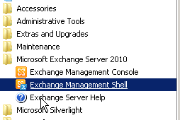

Права
Set-Mailbox demina@velkomfood.ru -GrantSendOnBehalfTo efilistova Выдать права Филистовой, отправить как Дёмина.
Отключенные П/Я
Get-MailboxDatabase | Get-MailboxStatistics | where {$_.DisconnectReason -ne $null} | ft displayname,database,disconnectreason -auto - поиск и просмотр отключенных п/я.
New-MailboxRestoreRequest -SourceDatabase имя_базы -SourceStoreMailbox "имя ящика>" -TargetMailbox "целевой ящик" - восстановление отключенного
п/я.
Get-MailboxRestoreRequest | fl - посмотреть состояние восстановления
Массовая работа с ящиками
get-mailbox | Search-Mailbox -SearchQuery 'subject:тема письма' -DeleteContent -Force - массовое удаление. По всем ящиками